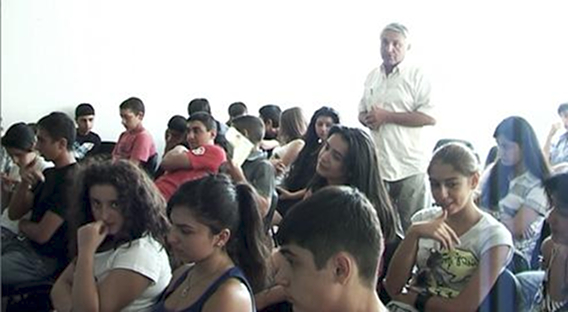

АШОТ ТИГРАНЯН ПРОТИВ БЕЗДЕЙСТВИЯ МИНИСТЕРСТВА ОБРАЗОВАНИЯ РА В УСЛОВИЯХ МАССОВЫХ НАРУШЕНИЙ ЗАКОНОВ РА В ОБЩЕОБРАЗОВАТЕЛЬНОЙ ПРАКТИКЕ
Протокол Гражданского слушания
Ереван
24.08.2010
Истец: Ашот Тигранян
Ответчик: Арсен Галстян
Председатель комиссии: Георгий Ванян
Члены комиссии:
Гаяне Испирян, преподаватель истории и обществоведения
Рафаэль Месропян. юрист, преподаватель начальной военной подготовки
Елена Чилингарян, ученица, 11 класс
Размик Петросян, ученик, 11 класс
Ваграм Мартиросян, писатель, преподаватель факультета журналистики ЕГУ
Ашот Блеян, директор Общеобразовательного комплекса «Мхитар Себастаци»
Программу осуществляет:
Кавказский Центр Миротворческих Инициатив - Армения
в сотрудничестве с Общеобразовательным комплексом «Мхитар Себастаци»
при поддержке Национального фонда демократии (NED)
Ереван
24.08.2010
Истец: Ашот Тигранян
Ответчик: Арсен Галстян
Председатель комиссии: Георгий Ванян
Члены комиссии:
Гаяне Испирян, преподаватель истории и обществоведения
Рафаэль Месропян. юрист, преподаватель начальной военной подготовки
Елена Чилингарян, ученица, 11 класс
Размик Петросян, ученик, 11 класс
Ваграм Мартиросян, писатель, преподаватель факультета журналистики ЕГУ
Ашот Блеян, директор Общеобразовательного комплекса «Мхитар Себастаци»
Программу осуществляет:
Кавказский Центр Миротворческих Инициатив - Армения
в сотрудничестве с Общеобразовательным комплексом «Мхитар Себастаци»
при поддержке Национального фонда демократии (NED)
ВЫСТУПЛЕНИЕ ИСТЦА
Руководитель Центра общественных наук Общеобразовательного комплекса «Мхитар Себастаци» и руководитель класса с углубленным изучением юридических наук и политологии, Ашот Тигранян.
Уважаемый суд! Поскольку, по моему мнению, сегодняшняя тема довольно серьезна и актуальна, и чтобы поместиться в рамки одного слушания, я построил мой иск на двух составляющих довольно широкого спектра проблем общеобразовательной системы. Первое – это создание препятствий для творческой активности детей, второе – нарушения права на образование выпускников основной школы, лишения их права выбора для себя соответствующей образовательной программы.
Вначале вкратце представлю законодательное поле по данному вопросу, после чего, на примере фактов, обосную, что министерство образования и науки Армении проявляет бездействие в выполнении своих обязанностей, в результате чего нарушаются права ребенка.
Хочу напомнить, что и Конвенция по правам детей и Закон РА по правам детей регулируют права граждан, не достигших 18 лет. Три закона Республики Армения: «Закон об образовании», «Закон об общеобразовательной системе» и «Закон о правах детей» - дают мне основания говорить о нарушении прав. Обращу Ваше внимание на два аспекта. Первое, любой закон определяет поле своего применения, то есть в первой статье говориться о главной задаче этого закона, почему этот закон создан и введен в действие. Во всех трех отмеченных мною законах отмечено в качестве основополагающего право ребенка на образование. По содержанию, это не то право, которое формально воспринимается нашим министерством, а то право, которое закреплено в законе о Правах ребенка. Осуществление этого права требует развития творческой активности, общего развития человека. Об этом идет речь, когда мы говорим о праве на образование. Для каждого индивидуума – оно предполагает создание возможности для максимального проявления своего личного потенциала. Все остальное, все, что относится к равенству в правах, права на отдых, и все остальные аспекты закона являются производными и служат этой главной задаче. Армения своим законодательством поставила задачу создать творческого гражданина, сформулировать личность, которая укрепит нашу государственность. И это отражает нашу реальную, сегодняшнюю потребность, и это очень важно для нашего будущего.
Теперь посмотрим, что происходит на практике. Думаю, здесь нет нужды раскрывать смысл понятия творческой деятельности. Думаю, у каждого из присутствующих есть понимание этого явления. Давайте посмотрим, как ограничивается и подавляется творческая активность. Я несколько дней внимательно изучал учебники по различным предметам и экзаменационные тесты. Здесь абсолютно не может идти речь о какой-либо творческой деятельности. Я для себя вывел формулу, что творческая активность имеет столько же связи с тестовой проверкой, сколько может быть связано закомплексованное общество с гражданским. При том этом такова ситуация не только в общественных, но и в естественных науках. Так, тесты по химии и по физике являются ничем иным, как проверкой механической памяти учащихся. Или же можно представить иначе – процесс тестирования – как процесс отгадывания в лотерее.
Мне не кажется, что кто-либо может сказать, что это не обязанность министерства образования. Применением данных тестов министерство нарушает не только первую статью закона о правах ребенка, но и закон, принятый по его собственной инициативе, который является основным документом, регулирующим вопросы общего образования. И в этом документе, к выпускнику системы предъявляется требование быть творческой личностью. Я обостряю ваше внимание на этом требовании. Как можно изучать историю, предмет, который является основой для формирования гражданина, через душегубку фактов и дат? Как можно воспитывать творческую личность по этим учебникам? Этими учебниками можно только мешать учителю!
Следующее. Есть одно очень важное право, которое нарушается глобально, и для взрослых и для детей – это право выражать мнение, получать и распространять информацию. Вот конкретный пример. Все мы знаем о процессе формирования старшей школы. Осуществило ли министерство какие либо шаги для того чтобы обеспечить право на получение информации для 9-классников, которые закончив основную школу должны сделать выбор в вопросе продолжения своего образования? Абсолютно ничего не сделано. Меня могут спросить, что может сделать министерство, если сами родители ущемляют право выбора своих детей? В качестве иллюстрации хочу привести пример. Недавно я беседовал с родителем ученика 9-ого класса школы им. Чехова. Я ему говорю, что знаю о том, что ваш ребенок ориентирован на историю и право… А он мне говорит: В каком это он возрасте, чтобы иметь ориентацию? Кто он вообще, чтобы что-то решать? Мы не можем непосредственно министерство обвинить в этом, несмотря на то, что это широко распространенное явление. Но предпринимает ли министерство шаги для педагогического воспитания родителей? И является ли это задачей министерства обеспечить, чтобы родители не давили на детей, чтобы родители получили необходимые знания о современной педагогике? Не хватит министерство не дает соответствующую информацию, еще и директора школ заключают между собой сделки, то есть если министерство решило, что две соседние школы – одна – основная, другая - старшая, то значит надо пассировать друг другу учеников: между школами происходит «договорный» обмен, - первоклассников меняют на девятиклассников. И что делает министерство, чтобы воспрепятствовать таким сделкам? Я тут не буду раскрывать подоплеку подобных сделок, просто приведу еще один факт. Встречаюсь с директором 144-ой школы и спрашиваю можно ли устроить ознакомительную встречу с моими учениками для ваших учеников. Он говорит, что можно, но не надо питать надежд, поскольку он уже «договорился» с другой старшей школой. Есть также случаи, когда руководители и работники колледжей при ВУЗах привлекают родителей несуществующими льготами.
В конце своего выступления хочу обратить Ваше внимание на следующее обстоятельство. Посмотрите на статью 4: равенство в правах детей независимо от….. Я не знаю человека, уверенного в том, что это равенство в правах обеспечено. И снова возникает вопрос, а причем тут министерство? О каком равенстве в правах в области образования может идти речь, если, приведу пример на примере учебников истории, два учебника 10 класса абсолютно не совпадают. Что делать учителю, если ребенок прошел историю до 15 века, а следующий учебник начинается с 20 века? Здесь нарушается право детей на равное пользование правом на образование. И в этом министерство не виновато?
Я не говорю о том, что тот или иной шаг министерства правилен или неправилен. Я говорю, что министерство бездействует. Потому что для министерства, не знаю почему, задачей номер один являются приемные экзамены в ВУЗ, в то время как для министерства если не первой, то хотя бы пятой задачей должно было быть, чтобы сидящие здесь 11- классники имели бы свои учебники. Вот такой простой пример. Спасибо.
Конец доклада.
Председатель, обращаясь ко всем, предлагает задавать вопросы Истцу.
Рафаэл Месропян, член комиссии: Как Вы представляете регулирование творческой активности детей со стороны министерства?
Истец: Возможно, некоторые мои определения были неточны. Я не говорю о ведомственном регулировании творческой активности. Я говорю об искоренении явлений, направленных против творческой активности, о препятствиях, чинимых творческой активности. Например, учебники созданные министерством являются препятствием для творческой активности учащихся. Взаимоотношения министерства и экзаменационного центра – тоже препятствуют этому. Во время одного из обсуждений, Рузан Царукян, директор фонда «Шаг за шагом» сделала интересное заявление, с которым я согласен, и которые не опровергли присутствующие: Школа не централизована на ребенке, и даже не централизована на учителе, школа централизована на тестах. И эта тесто-центричная школа тормозит творческую активность детей. Только этого достаточно чтобы выдвинуть обвинение в том, что творческая активность тормозится по субъективным причинам, поскольку законодательное поле в этом смысле не нуждается в изменениях, нужно только обеспечить действие уже существующих законов.
Саргсян Ваге, ученик и «представитель интересов министерства»: Почему учителя не активны в вопросе создания учебников и тестов? Ведь они имеют право обратиться в министерство?
Истец: Это очень хороший вопрос, спасибо. Значит не только я, но и многие, кто напрямую связан с областью образования, выразили свое мнение о тестах и учебниках, и письменно и устно, но получили – 0,1 процент реакции. Не хочу показаться нескромным, но приведу пример о себе. В прошлом году на курсах квалификации один из авторов учебников мне лично обещал, что если я выступлю со своими критическими замечаниями, он мне ответит публично. Речь шла о том, что поскольку министерство не отвечает на письменно изложенные альтернативные мнения об учебниках, я предложил ему, что выступлю в прессе и буду ждать ответа. Он обещал – но не ответил. Заглавие моей статьи, вышедшей в октябре 2009 в газете «Грапарак» было такое: «Когда, открыв учебник, теряешь желание учиться». Что касается того, что учителя должны проявлять творческую активность, но не проявляют, я с этим согласен, но виню не учителей, а опять таки тех, кто им мешает. И добавлю, чтобы было ясно, если в какой-то прекрасный день представители министерства выходят из своих кабинетов, то только для того, чтобы обвинить творческого учителя в том, что он отклонился от каких-то установленных государством норм.
Бывший ученик комплекса Мхитар Себастаци: Обращались ли Вы лично по какому либо конкретному вопросу в Министерство и какой ответ получили?
Истец: Один раз я имел повод общаться с официальными лицами, после чего попросил свое руководство по возможности освободить меня от прохождения через этот ад.
Саргсян Ваге: У меня второй вопрос к Истцу. Какой законодательный акт препятствует реализации отмеченных Вами прав?
Истец: Данные права обеспечены законом и следовательно никакой другой закон их не ограничивает. Права нарушаются во время педагогической практики.
Председатель объявляет об окончании сессии вопросов и передает слово Ответчику.
ОТВЕТНАЯ РЕЧЬ АРСЕНА ГАЛСТЯНА
Уважаемый Суд! Я, Арсен Галстян, историк, преподаю в старшей школе комплекса «Мхитар Себастаци», по правилам слушания, представляю Министерство образования РА. По первой части Иска хочу отметить следующее. Мы находимся в переходном периоде, в периоде реформирования образовательной системы, и не секрет, что до сих пор не преодолена старая система обучения – так называемая «школа зубрежки». Претензии истца по этой части в основном относятся к создателям учебников и тестов. В законе РА об образовании отмечено, что в процессе создания учебных материалов предусмотрено активное участие всех заинтересованных сторон. В данном случае это также и педагоги. В создании любого материала, помимо представителей министерства или центра оценки и тестирования, или Национального института, обязательно участвуют учителя, учителя методисты, учителя со стажем.
Что касается тестовых заданий. В период переходный от советской школы для педагогов- исследователей создание тестовых заданий было абсолютно новой задачей. И Министерство не раз, через газеты и телевидение объявляло о своей готовности сотрудничать. В настоящее время есть специальные ТВ программы об образовательных программах, на двух общественных каналах и телеканале «Кентрон», особенно в последнее время – значительно активизировалась деятельность министерства именно по линии сотрудничества. А введение механизма тестирования в Армении, это не мы придумали, это государственная политика по применению западных норм образования в Армении. Притом, эффективность этой системы подтверждена и местными, и западными независимыми экспертами. В этом вопросе мы сотрудничали с различными НПО, и конечно с Организацией образовательных реформ Евросоюза, с ЮНЕСКО, с ЮНИСЕФ, и это сотрудничество естественно принимало за основу Конвенцию о правах ребенка.
Хочу добавить также, что тестовые задания сегодня создаются независимым органом при правительстве – Центром оценки и тестирования, и этот новый орган не подчиняется министерству, несмотря на то, что в его комиссии представлен замминистра, этот орган подчиняется премьеру. Так что, реплика о том, что министерство занято только вступительными экзаменами в ВУЗ лишена оснований. Начиная с этого года министерство, в соответствии с законом вообще не будет вмешиваться в этот вопрос.
Хочу отметить также, что процесс создания и учебников и тестов находится в широком поле совершенствования. Учебник не является исчерпывающим источником знания. Учебник – это ориентир, который ставит вопросы, определяет содержание тем, которые должны исследоваться в учебном процессе. Тестовая система также дает определенную свободу. Тест это не перечень вопросов, как многие себе представляют, есть множество видов тестирования и в этом поле существует много различных методик и возможности совершенствования практически не ограничены. Для исключения ошибок и недостатков нужна последовательная работа, в первую очередь – практикующих педагогов.
Теперь по отмеченной в Иске проблеме права на получение и распространение информации. На основе закона об образовании, министерство обеспечивает право на получение информации каждого учащегося, не только о работе министерства, но и о политических и культурных событиях, происходящих в стране, не зависимо от того, кто является автором-инициатором этих событий, государство, независимые организации или политическая оппозиция. Например, если есть мероприятия, собрания или шествия касающиеся прав детей, я сам многократно наблюдал, как на них активно участвовали учащиеся, и не все эти мероприятия были ведомственными. Хочу напомнить, что существующие ограничения регулируются законами о собраниях и об информации.
Истец обратился также к проблемам старшей школы, которые я сам склонен связывать с особенностями переходного периода и с тем вопросом, насколько именно сегодня необходимо было создание старшей школы. Эта проблема тоже очень широко обсуждалась, и в Национальном собрании, и на уровне комиссий НС. Это одновременно важная и очень трудная задача. Истец затронул одну из проблем, касающихся произвола директоров школ в вопросе перевода учащихся в старшую школу или в другие учреждения – гимназии и училища, с нарушением из прав учащихся. Должен отметить, что, к сожалению, у министерства нет правовых рычагов воздействия на администрацию школ, находящихся в подчинении общинных структур. Министерство осуществляет только профессиональную поддержку деятельности школ. Фактически данная часть иска относится к общинным структурам, и они несут ответственность за контроль над деятельностью директоров. В любом случае вы знаете, что в министерстве действует инспекция, и в случае если есть конкретные факты, на их основе министерство может сделать собственное заключение в ввести в оборот решение данного дела. Имею ввиду, письменное официальное заключение, на основе которого могут быть приняты определенные законами меры наказания людей, произвольно использующих свое служебное положение. Хочу напомнить, что недавно министр Армен Ашотян говорил о проблеме директоров школ, злоупотребляющие своим служебным положением и о позиции министерства о недопущении данных фактов.
Что касается соблюдения прав детей в практике общеобразовательной системы, то, думаю, это является не только задачей министерства, но и всей общественности. Министерство, например, считает, что есть ряд упущений в сфере права детей на отдых, и требуется принять соответствующие шаги в этом направлении. Есть ряд вопросов, которые находятся в ведении правоохранительных органов, правозащитных организаций. В завершении хочу отметить, изменения к лучшему возможны только при конструктивном сотрудничестве всех заинтересованных сторон.
Конец доклада.
Председатель, обращаясь ко всем, предлагает задавать вопросы Ответчику.
Истец: Каково реальное положение дел на сегодня? Считаете ли вы, что и выпускные тесты и тесты вступительных экзаменов обеспечивают выполнение первой статьи Закона о правах ребенка?
Ответчик: Права детей, о которых вы упорно говорите, признаны во всех странах, где действует аналогичная система тестирования. Тесты применяемые у нас одобрены со стороны иностранных экспертов, специалистов из США и Европы, которые принимали участие из разработке. Недостатки в процессе могут быть, но эксперты одобрили эти тесты.
Истец: Неужели участие экспертов может оправдать бездействие министерства?
Ответчик: Я говорю о том, что есть большая дорога к совершенству и министерства, и педагогов, я конечно могу отметить активность вашего комплекса, как пример того, что мы обладаем большим потенциалом.
Рафаэль Месропян, член комиссии: Можете ли вы определить четко границу между необходимым администрированием и свободой творчества, где проходит эта линия между регулированием и подавлением инициативы?
Ответчик: Я отвечу вопросом на вопрос: Знакомы ли вы с Законом об образовании? Именно это закон и регулирует сферы администрирования и свободы.
Рафаэль Месропян: Я имею в виду именно наш переходный период, в каком объеме должны применяться административные санкции, направленные на искоренение нарушений и решение проблем по тем же вопросам прав детей, чтобы эти санкции сами по себе не ограничивали творческую свободу?
Ответчик: Любое превышение власти является в первую очередь нарушением Конституции и чиновники министерства тоже ограничены этим и другими законом.
Размик Петросян, член комиссии: В Вашем восприятии обеспечение права на информацию со стороны министерства состоит в том, что оно не мешает получать информацию, так это ли не так?
Ответчик: В процессе обучения в школе ваш доступ к газетам, интернет и другим источникам информации не ограничивается министерством. Есть ли у вас конкретные примеры, что это не так? Если нет, то претензии безосновательны.
Гаяне Испирян, член комиссии: Как вы оцениваете ход реформы - есть ли положительные результаты? И в частности переход к новой школе, где мы уже имеем 2-летний опыт.
Ответчик: Образование – это процесс, и значит по одному-двум шагам говорить о результате невозможно. Зимой нельзя точно предсказать, какой будет весна. Идет последовательное развитие. И наше сегодняшнее слушание тоже результат и часть этого процесса.
Ани Сафарян, учащаяся Комплекса: То, что мы имеет свободу получения информации – это понятно, но есть ли у нас возможность получения полноценной информации?
Ответчик: Опять мне придется ответить вопросом на вопрос: О чем, о какой именно информации вы спрашиваете? Конкретно по какому вопросу она неполноценна?
Ани Сафарян: Я имею ввиду информацию, касающуюся например процесса создания тестов, есть ли целенаправленное информирования учащихся по этому вопросу?
Ответчик: Тестовые задания создаются на основе учебных планов, у каждого предмета есть определенный содержательный объем и комиссия на этой основе создает вопросы, то есть тесты создаются на основе ваших учебников, а о самом процессе вы можете более подробно узнать из официального сайта министерства.
Ваграм Мартиросян, член комиссии: Касательно права на получение информации. Ответчик так и не определил свое восприятие: что это право или возможность? Если это право, то оно должно иметь соответственное обеспечение. Например, если у учащихся нет бесплатного доступа в Интернет, это значит, что право на получение информации через сайт министерства - есть только на бумаге. Это первый вопрос и второй: Поскольку различные авторитетные организации считают, что в Армении нарушается свобода слова, на этом общем фоне, не считаете ли Вы, что нарушаются также и права детей.
Ответчик: Ваш первый вопрос имеет социальный характер. Сегодня у нас нет бюджетных средств достаточных для обеспечения бесплатного интернета, но по возможности, и особенно для детей осуществляются различные программы. Второй вопрос я считаю риторическим.
Ашот Блеян, член комиссии: В качестве реплики на Ваш ответ, хочу отметить, что выполнение любого положения закона должно быть обеспечено финансово, иначе этот закон теряет смысл и должен быть отменен. Мой вопрос Ответчику: Кто является учредителем системы образования?
Ответчик: Правительство РА.
Ашот Блеян: Является ли министр образования членом этого правительства?
Ответчик: Естественно.
Ашот Блеян: То есть получается, что учредитель не имеет права вносить изменения в организацию, которую он сам создал. Это абсурд. Ведь учредитель определяет полномочия и имеет право законодательной инициативы. Приведите одну законодательную инициативу министерства, направленную на получение рычагов своего воздействия. Пользовались ли вы хоть раз этим своим правом для того чтобы что-либо изменить существующее положение?
Ответчик: Нет.
Ашот Блеян: Можете ли Вы указать какой-либо закон, в соотвествии с которым запрещено пользоваться словарем во время теста? И последний вопрос: было ли заказана Вами независимая экспертиза хода реформ на предмет того, насколько этот процесс соответствует праву на получение образования?
Ответчик: Конечно же есть серьезные упущения, но как я уже говорил независимые эксперты вовлечены в процесс реформирования. И хочу еще раз напомнить, что Центр тестирования и оценки не находится в нашем подчинении.
Председатель предлагает перейти к комментариям.
Размик Петросян: Вопросы, поднятые Истцом актуальны для меня, как учащегося. Но истец выдвинул обвинения в нарушении прав, ответчик ответил, но никто не отметил, по каким именно причинам нарушаются эти прав, и что конкретно нужно делать чтобы исключить эти нарушения.
Елена Чилингарян: Оба докладчика воспользовались ораторскими умениями для того, чтобы описать существующее положение. Но ничего не было сказано о том как и когда будут исправлены ошибки и недостатки. Что касается творческой активности, для меня не понятно как ее можно связать с тестами. Конечно же тесты несовершенны, но я не могу представить как можно, по какой системе можно оценивать творческую активность.
Рафаэль Месропян: Истец требовал, чтобы законы действовали и вменял министерству невыполнение обязанностей, но он меня не убедил, потому что не было представлено конкретного факта конкретного бездействия. Не было сказано о том, что конкретно было обязано сделать министерство, и не сделало. Хотя Ответчик тоже уходил от фактов. Сами проблемы важны, но сегодняшнему обсуждению не хватало конкретики.
Гаяне Испирян: Еще раз о наболевшем вопросе учебников. Хочу отметить, что на все наши замечания и протесты, единственный ответ который мы получали от представителей министерства : «Дети настолько развиты, что могуи учиться по этим учебникам и преодолеть связанные с этим трудности» (!)
Ваграм Мартиросян: Я бы хотел, просто отметить, что все зависит от того какая задача ставится. Если ставится задача, например, обеспечить интернет – средства могут быть найдены.
Ашот Блеян: Мы используем несовершенные инструменты и не смотрим на последствия, не оцениваем результат применения, и соответственно – не принимаем существования других, может быть, намного более лучших инструментов. Право – это ответственность правительства, которое только и делает, все время оправдывается и объясняет, почему оно бездействует. Содержание права на образование закреплено в законах, и не обеспечивать его – не законно. Есть право менять закон, поменяйте закон под свою деятельность или меняйте свою деятельность. Расширяйте альтернативу, поощряйте новаторство, то есть для того, чтобы не бездействовать – нужно действие.
Председатель дает возможность Истцу и Ответчику выступить с заключительным словом.
Истец: Право дает четкую формулировку понятия бездействия. Более просто – это невыполнение обязанностей. Сегодня министерство не выполняет свою обязанность по обеспечению творческой активности детей. Проявляет бездействие. Когда говорю об учебниках и тестах - это уже факты. Что касается свободы получения информации, здесь прозвучали более широкие трактовки, я же поставил конкретный вопрос. Учащийся 9 класса информирован об особенностях старшей школы? Нет. То есть – тут тоже есть бездействие.
Ответчик: Я признаю, что в системе образования, также как и в других сферах жизнедеятельности нашего государства есть многочисленные проблемы, упущения и ошибки. И исправить их можно благодаря гражданской активности. Борющихся за защиту своих прав в нашей стране немного. Поэтому я выступаю также с призывом – чтобы вы сами тоже не бездействовали, если бы общественность, хотя бы несколько активистов смогли бы начать последовательную борьбу, а не ограничились отдельными статьями и выступлениями, ситуация была бы намного лучше. Нельзя искать виноватого только в одном звене.
Кто считает аргументы и взгляд Истца более обоснованными?
За – 25
Против – 4
Воздержавшихся – 8
Что касается тестовых заданий. В период переходный от советской школы для педагогов- исследователей создание тестовых заданий было абсолютно новой задачей. И Министерство не раз, через газеты и телевидение объявляло о своей готовности сотрудничать. В настоящее время есть специальные ТВ программы об образовательных программах, на двух общественных каналах и телеканале «Кентрон», особенно в последнее время – значительно активизировалась деятельность министерства именно по линии сотрудничества. А введение механизма тестирования в Армении, это не мы придумали, это государственная политика по применению западных норм образования в Армении. Притом, эффективность этой системы подтверждена и местными, и западными независимыми экспертами. В этом вопросе мы сотрудничали с различными НПО, и конечно с Организацией образовательных реформ Евросоюза, с ЮНЕСКО, с ЮНИСЕФ, и это сотрудничество естественно принимало за основу Конвенцию о правах ребенка.
Хочу добавить также, что тестовые задания сегодня создаются независимым органом при правительстве – Центром оценки и тестирования, и этот новый орган не подчиняется министерству, несмотря на то, что в его комиссии представлен замминистра, этот орган подчиняется премьеру. Так что, реплика о том, что министерство занято только вступительными экзаменами в ВУЗ лишена оснований. Начиная с этого года министерство, в соответствии с законом вообще не будет вмешиваться в этот вопрос.
Хочу отметить также, что процесс создания и учебников и тестов находится в широком поле совершенствования. Учебник не является исчерпывающим источником знания. Учебник – это ориентир, который ставит вопросы, определяет содержание тем, которые должны исследоваться в учебном процессе. Тестовая система также дает определенную свободу. Тест это не перечень вопросов, как многие себе представляют, есть множество видов тестирования и в этом поле существует много различных методик и возможности совершенствования практически не ограничены. Для исключения ошибок и недостатков нужна последовательная работа, в первую очередь – практикующих педагогов.
Теперь по отмеченной в Иске проблеме права на получение и распространение информации. На основе закона об образовании, министерство обеспечивает право на получение информации каждого учащегося, не только о работе министерства, но и о политических и культурных событиях, происходящих в стране, не зависимо от того, кто является автором-инициатором этих событий, государство, независимые организации или политическая оппозиция. Например, если есть мероприятия, собрания или шествия касающиеся прав детей, я сам многократно наблюдал, как на них активно участвовали учащиеся, и не все эти мероприятия были ведомственными. Хочу напомнить, что существующие ограничения регулируются законами о собраниях и об информации.
Истец обратился также к проблемам старшей школы, которые я сам склонен связывать с особенностями переходного периода и с тем вопросом, насколько именно сегодня необходимо было создание старшей школы. Эта проблема тоже очень широко обсуждалась, и в Национальном собрании, и на уровне комиссий НС. Это одновременно важная и очень трудная задача. Истец затронул одну из проблем, касающихся произвола директоров школ в вопросе перевода учащихся в старшую школу или в другие учреждения – гимназии и училища, с нарушением из прав учащихся. Должен отметить, что, к сожалению, у министерства нет правовых рычагов воздействия на администрацию школ, находящихся в подчинении общинных структур. Министерство осуществляет только профессиональную поддержку деятельности школ. Фактически данная часть иска относится к общинным структурам, и они несут ответственность за контроль над деятельностью директоров. В любом случае вы знаете, что в министерстве действует инспекция, и в случае если есть конкретные факты, на их основе министерство может сделать собственное заключение в ввести в оборот решение данного дела. Имею ввиду, письменное официальное заключение, на основе которого могут быть приняты определенные законами меры наказания людей, произвольно использующих свое служебное положение. Хочу напомнить, что недавно министр Армен Ашотян говорил о проблеме директоров школ, злоупотребляющие своим служебным положением и о позиции министерства о недопущении данных фактов.
Что касается соблюдения прав детей в практике общеобразовательной системы, то, думаю, это является не только задачей министерства, но и всей общественности. Министерство, например, считает, что есть ряд упущений в сфере права детей на отдых, и требуется принять соответствующие шаги в этом направлении. Есть ряд вопросов, которые находятся в ведении правоохранительных органов, правозащитных организаций. В завершении хочу отметить, изменения к лучшему возможны только при конструктивном сотрудничестве всех заинтересованных сторон.
Конец доклада.
Председатель, обращаясь ко всем, предлагает задавать вопросы Ответчику.
Истец: Каково реальное положение дел на сегодня? Считаете ли вы, что и выпускные тесты и тесты вступительных экзаменов обеспечивают выполнение первой статьи Закона о правах ребенка?
Ответчик: Права детей, о которых вы упорно говорите, признаны во всех странах, где действует аналогичная система тестирования. Тесты применяемые у нас одобрены со стороны иностранных экспертов, специалистов из США и Европы, которые принимали участие из разработке. Недостатки в процессе могут быть, но эксперты одобрили эти тесты.
Истец: Неужели участие экспертов может оправдать бездействие министерства?
Ответчик: Я говорю о том, что есть большая дорога к совершенству и министерства, и педагогов, я конечно могу отметить активность вашего комплекса, как пример того, что мы обладаем большим потенциалом.
Рафаэль Месропян, член комиссии: Можете ли вы определить четко границу между необходимым администрированием и свободой творчества, где проходит эта линия между регулированием и подавлением инициативы?
Ответчик: Я отвечу вопросом на вопрос: Знакомы ли вы с Законом об образовании? Именно это закон и регулирует сферы администрирования и свободы.
Рафаэль Месропян: Я имею в виду именно наш переходный период, в каком объеме должны применяться административные санкции, направленные на искоренение нарушений и решение проблем по тем же вопросам прав детей, чтобы эти санкции сами по себе не ограничивали творческую свободу?
Ответчик: Любое превышение власти является в первую очередь нарушением Конституции и чиновники министерства тоже ограничены этим и другими законом.
Размик Петросян, член комиссии: В Вашем восприятии обеспечение права на информацию со стороны министерства состоит в том, что оно не мешает получать информацию, так это ли не так?
Ответчик: В процессе обучения в школе ваш доступ к газетам, интернет и другим источникам информации не ограничивается министерством. Есть ли у вас конкретные примеры, что это не так? Если нет, то претензии безосновательны.
Гаяне Испирян, член комиссии: Как вы оцениваете ход реформы - есть ли положительные результаты? И в частности переход к новой школе, где мы уже имеем 2-летний опыт.
Ответчик: Образование – это процесс, и значит по одному-двум шагам говорить о результате невозможно. Зимой нельзя точно предсказать, какой будет весна. Идет последовательное развитие. И наше сегодняшнее слушание тоже результат и часть этого процесса.
Ани Сафарян, учащаяся Комплекса: То, что мы имеет свободу получения информации – это понятно, но есть ли у нас возможность получения полноценной информации?
Ответчик: Опять мне придется ответить вопросом на вопрос: О чем, о какой именно информации вы спрашиваете? Конкретно по какому вопросу она неполноценна?
Ани Сафарян: Я имею ввиду информацию, касающуюся например процесса создания тестов, есть ли целенаправленное информирования учащихся по этому вопросу?
Ответчик: Тестовые задания создаются на основе учебных планов, у каждого предмета есть определенный содержательный объем и комиссия на этой основе создает вопросы, то есть тесты создаются на основе ваших учебников, а о самом процессе вы можете более подробно узнать из официального сайта министерства.
Ваграм Мартиросян, член комиссии: Касательно права на получение информации. Ответчик так и не определил свое восприятие: что это право или возможность? Если это право, то оно должно иметь соответственное обеспечение. Например, если у учащихся нет бесплатного доступа в Интернет, это значит, что право на получение информации через сайт министерства - есть только на бумаге. Это первый вопрос и второй: Поскольку различные авторитетные организации считают, что в Армении нарушается свобода слова, на этом общем фоне, не считаете ли Вы, что нарушаются также и права детей.
Ответчик: Ваш первый вопрос имеет социальный характер. Сегодня у нас нет бюджетных средств достаточных для обеспечения бесплатного интернета, но по возможности, и особенно для детей осуществляются различные программы. Второй вопрос я считаю риторическим.
Ашот Блеян, член комиссии: В качестве реплики на Ваш ответ, хочу отметить, что выполнение любого положения закона должно быть обеспечено финансово, иначе этот закон теряет смысл и должен быть отменен. Мой вопрос Ответчику: Кто является учредителем системы образования?
Ответчик: Правительство РА.
Ашот Блеян: Является ли министр образования членом этого правительства?
Ответчик: Естественно.
Ашот Блеян: То есть получается, что учредитель не имеет права вносить изменения в организацию, которую он сам создал. Это абсурд. Ведь учредитель определяет полномочия и имеет право законодательной инициативы. Приведите одну законодательную инициативу министерства, направленную на получение рычагов своего воздействия. Пользовались ли вы хоть раз этим своим правом для того чтобы что-либо изменить существующее положение?
Ответчик: Нет.
Ашот Блеян: Можете ли Вы указать какой-либо закон, в соотвествии с которым запрещено пользоваться словарем во время теста? И последний вопрос: было ли заказана Вами независимая экспертиза хода реформ на предмет того, насколько этот процесс соответствует праву на получение образования?
Ответчик: Конечно же есть серьезные упущения, но как я уже говорил независимые эксперты вовлечены в процесс реформирования. И хочу еще раз напомнить, что Центр тестирования и оценки не находится в нашем подчинении.
Председатель предлагает перейти к комментариям.
Размик Петросян: Вопросы, поднятые Истцом актуальны для меня, как учащегося. Но истец выдвинул обвинения в нарушении прав, ответчик ответил, но никто не отметил, по каким именно причинам нарушаются эти прав, и что конкретно нужно делать чтобы исключить эти нарушения.
Елена Чилингарян: Оба докладчика воспользовались ораторскими умениями для того, чтобы описать существующее положение. Но ничего не было сказано о том как и когда будут исправлены ошибки и недостатки. Что касается творческой активности, для меня не понятно как ее можно связать с тестами. Конечно же тесты несовершенны, но я не могу представить как можно, по какой системе можно оценивать творческую активность.
Рафаэль Месропян: Истец требовал, чтобы законы действовали и вменял министерству невыполнение обязанностей, но он меня не убедил, потому что не было представлено конкретного факта конкретного бездействия. Не было сказано о том, что конкретно было обязано сделать министерство, и не сделало. Хотя Ответчик тоже уходил от фактов. Сами проблемы важны, но сегодняшнему обсуждению не хватало конкретики.
Гаяне Испирян: Еще раз о наболевшем вопросе учебников. Хочу отметить, что на все наши замечания и протесты, единственный ответ который мы получали от представителей министерства : «Дети настолько развиты, что могуи учиться по этим учебникам и преодолеть связанные с этим трудности» (!)
Ваграм Мартиросян: Я бы хотел, просто отметить, что все зависит от того какая задача ставится. Если ставится задача, например, обеспечить интернет – средства могут быть найдены.
Ашот Блеян: Мы используем несовершенные инструменты и не смотрим на последствия, не оцениваем результат применения, и соответственно – не принимаем существования других, может быть, намного более лучших инструментов. Право – это ответственность правительства, которое только и делает, все время оправдывается и объясняет, почему оно бездействует. Содержание права на образование закреплено в законах, и не обеспечивать его – не законно. Есть право менять закон, поменяйте закон под свою деятельность или меняйте свою деятельность. Расширяйте альтернативу, поощряйте новаторство, то есть для того, чтобы не бездействовать – нужно действие.
Председатель дает возможность Истцу и Ответчику выступить с заключительным словом.
Истец: Право дает четкую формулировку понятия бездействия. Более просто – это невыполнение обязанностей. Сегодня министерство не выполняет свою обязанность по обеспечению творческой активности детей. Проявляет бездействие. Когда говорю об учебниках и тестах - это уже факты. Что касается свободы получения информации, здесь прозвучали более широкие трактовки, я же поставил конкретный вопрос. Учащийся 9 класса информирован об особенностях старшей школы? Нет. То есть – тут тоже есть бездействие.
Ответчик: Я признаю, что в системе образования, также как и в других сферах жизнедеятельности нашего государства есть многочисленные проблемы, упущения и ошибки. И исправить их можно благодаря гражданской активности. Борющихся за защиту своих прав в нашей стране немного. Поэтому я выступаю также с призывом – чтобы вы сами тоже не бездействовали, если бы общественность, хотя бы несколько активистов смогли бы начать последовательную борьбу, а не ограничились отдельными статьями и выступлениями, ситуация была бы намного лучше. Нельзя искать виноватого только в одном звене.
ИТОГИ ГОЛОСОВАНИЯ
Кто считает аргументы и взгляд Истца более обоснованными?
За – 25
Против – 4
Воздержавшихся – 8
ЗАОЧНЫЙ КОММЕНТАРИЙ АВТОРА ПРОЕКТА НИЯЗИ МЕХТИ
В Азербайджане переведена Конвенция по Правам Детей. Многие знают, что национальное законодательство должно учитывать положения этой Конвенции. Однако разительно противоречит этой ситуации то, что количество НПО по защите Прав детей не велико. В рамках программ Символического Конституционного Суда, являющейся ветвью Альянса Женщин за Гражданское общество, мы провели два слушания по этой теме.
В июне 2000 года мы провели символический суд на тему «Ассоциация Правового Просвещения против практики и несоответствия законодательства в сфере социальных прав детей Конституции и Международным конвенциям». В нем истец заявил: Конвенция по Правам Детей принята в 1989 г. Азербайджан же в 1993-году присоединился к ней. Однако в течении 5 лет у нас не был принят Закон о Правах детей и тем самым мы нарушили свое обещание при подписании Конвенции. Названный закон был принят только 1998 году, однако его предписания остались на бумаге и до сих пор не созданы необходимые условия в сфере социальных прав детей. Статья 3 в Конвенции требует, чтобы в любых ситуациях Государственные органы, суды и т.п. прежде всего, должны учитывать интересы детей. Однако Азербайджанское Государство не выполнило принятые на себя обязанности, и не предпринимало необходимые законодательные и административные меры для защиты в конфликтных ситуациях интересов детей. Статья 4 Конвенции гласит, что государства-участники обязаны принимать законодательные и административные меры для реализации социальных прав детей. Также Статья 24 Конвенция по Правам Детей обязывает предпринимать все меры по здравоохранению детей. Несмотря на то, что Азербайджан подписал эту Конвенцию, его в законодательстве многие ее положения не отражены, или отражены декларативно. Так, например, в Законе об увековечивании имен шехидов, и о помощи их семьям особое место занимает перечисление прав детей шехидов до 18 лет (например, представление им льготных путевок, бесплатное лекарство и т.п), однако там не дается законодательный механизм удовлетворения этих прав.
В разных законах (например, в Законе о государственной политики относительно молодежи) относительно детей с ограниченными возможностями, сирот имеются разные льготы и денежные помощи, однако они или незначительны, или не реальны. В октябре 2005 года в рамках Символического Конституционного Суда мы провели слушание «Проф. Рахман Бадалов против «Конвенции по Правам детей» и против Закона Республики Азербайджан о Правах Детей». В нем истец попытался доказать, что перечисленные там права детей слишком опережают нашу действительность, поэтому не действенны. Отношения к детям, продиктованные национальными традициями слишком противоречат Конвенцию и Закону, поэтому требуется еще много времени пока эти отношения можно будет корректировать под Конвенции и Закон о Правах Детей.
В июне 2000 года мы провели символический суд на тему «Ассоциация Правового Просвещения против практики и несоответствия законодательства в сфере социальных прав детей Конституции и Международным конвенциям». В нем истец заявил: Конвенция по Правам Детей принята в 1989 г. Азербайджан же в 1993-году присоединился к ней. Однако в течении 5 лет у нас не был принят Закон о Правах детей и тем самым мы нарушили свое обещание при подписании Конвенции. Названный закон был принят только 1998 году, однако его предписания остались на бумаге и до сих пор не созданы необходимые условия в сфере социальных прав детей. Статья 3 в Конвенции требует, чтобы в любых ситуациях Государственные органы, суды и т.п. прежде всего, должны учитывать интересы детей. Однако Азербайджанское Государство не выполнило принятые на себя обязанности, и не предпринимало необходимые законодательные и административные меры для защиты в конфликтных ситуациях интересов детей. Статья 4 Конвенции гласит, что государства-участники обязаны принимать законодательные и административные меры для реализации социальных прав детей. Также Статья 24 Конвенция по Правам Детей обязывает предпринимать все меры по здравоохранению детей. Несмотря на то, что Азербайджан подписал эту Конвенцию, его в законодательстве многие ее положения не отражены, или отражены декларативно. Так, например, в Законе об увековечивании имен шехидов, и о помощи их семьям особое место занимает перечисление прав детей шехидов до 18 лет (например, представление им льготных путевок, бесплатное лекарство и т.п), однако там не дается законодательный механизм удовлетворения этих прав.
В разных законах (например, в Законе о государственной политики относительно молодежи) относительно детей с ограниченными возможностями, сирот имеются разные льготы и денежные помощи, однако они или незначительны, или не реальны. В октябре 2005 года в рамках Символического Конституционного Суда мы провели слушание «Проф. Рахман Бадалов против «Конвенции по Правам детей» и против Закона Республики Азербайджан о Правах Детей». В нем истец попытался доказать, что перечисленные там права детей слишком опережают нашу действительность, поэтому не действенны. Отношения к детям, продиктованные национальными традициями слишком противоречат Конвенцию и Закону, поэтому требуется еще много времени пока эти отношения можно будет корректировать под Конвенции и Закон о Правах Детей.
РАХМАН БАДАЛОВ: С ЧЕГО НАЧИНАЕТСЯ... БУДУЩЕЕ
Наши дети, уже после первых месяцев обучения,
ходят в школу как на каторгу,
а во время перемен с диким воем и гвалтом,
выбегают из класса на «свободу».
Сколько разговоров было о нашей школе в последние десятилетия. А воз и ныне там. Действительно, наша школа - наша боль, наше разочарование, наш скепсис. Отчётливое понимание того, что если не сможем переломить ситуацию с нашей школой, придётся признать: у нашей страны нет будущего.
Внешне всё выглядит нормально. Большинство детей ходит в школу. После почти 10-летних обсуждений, принят «Закон об Образовании». Школьные здания постоянно ремонтируются. После ремонта школьное здание, которое напротив метро «Ичери Шехер», кажется, почти выставочным, и говорят, компьютеры установлены, чуть ли не на каждой парте. Наш министр образования много-много лет выступает в привычном стиле. Все нормально, никакой коррупции в системе образования у нас нет, есть отдельные случаи поборов, взяточничества, мы открыто их признаём (наши высокопоставленные чиновники никогда не боялись правды?!), мы с ними боремся, и если вы столкнётесь с подобными фактами, обращайтесь непосредственно ко мне.
Только вот в чём вопрос, к кому обращаться, если речь идёт о циничном министре, вся энергия которого направлена на то, чтобы выжить в закулисных манёврах в высоких эшелонах власти, к кому обращаться, если мы прекрасно понимаем, что на жёсткой вертикали власти наш министр (как и прочие министры) должен постоянно учитывать настроения и намерения тех, кто вверху, а не тех, кто внизу. А пока бедные наши родители, чада которых готовятся в школу, в полной растерянности, по той простой причине, что у нас нет обычных нормальных человеческих школ. Подчёркиваю человеческих, т.е. скроенных по меркам гражданина страны, которого условно можно отнести к «среднему классу» (каждый раз приходится мысленно обращаться к этому классу, которого нет: своеобразный аналог.
Одни школы у нас образцово-показательные (думаю, что и в школе напротив станции метро, придётся демонстрировать признательность «партии и правительству», а не проявлять свободу выбора), другие элитарно-обособленные (не только все ученики приезжают на автомобилях с водителем, это стало привычным, но бывает, что за рулем семиклассник, а рядом телохранитель), третьи мнят себя филиалами Академии наук и готовят «учёных», чуть ли не с начальной школы, четвёртые, пятые, шестые… Казалось бы, так и должно быть, похвальное разнообразие, различные предложения в зависимости от финансовых возможностей родителей и их социального статуса, казалось бы, так обстоит дело во всём мире, есть частные школы, платные, с более высокими требованиями, и есть обычные, общенациональные (государственные), бесплатные, которые можно закончить, имея очень низкие баллы по некоторым предметам. Но наша ситуация только похожая (не устаю повторять, что название пьесы Рустама Ибрагимбекова «Похожий на льва» - общенациональная метафора), во многом, имитация реального разнообразия.
Для наших бедных родителей, по существу, нет выбора, они мечутся, расспрашивают, принимают решение, о котором очень скоро начинают жалеть. Школа, возможно в большей степени, чем всё остальное, демонстрирует наши амбиции и их огромный разрыв с реальностью, намерение отвечать самым высоким стандартам (назовём их европейскими) и неумение трезво оценить собственные возможности.
Мы так и не удосужились ответить на вопрос, каким должно быть у нас обязательное школьное образование (6, 8, 10, или 12-тилетнее?), какова его цель, какими должны быть его стандарты? В конце концов, являются ли для нас приоритетными знания, полученные в школе (интересно какой процент наших взрослых могут сказать, что им пригодилось в жизни знание «ботаники», «химии» и «тригонометрии»), или важнее знаний, психическое и физическое здоровье, гражданская позиция, личность школьника?
Как и во всём остальном, мы больше заботимся о том, как выглядим в глазах других, чем какими являемся на самом деле.
Попробую назвать три болевые точки нашей школы (несомненно, их больше, ограничусь тремя). Говорю не как профессионал (интересно было бы услышать, какие «болевые точки» видят профессионалы), а как гражданин и как родитель (теперь, больше как дедушка).
Признаемся, что это далеко не привилегированное, а если говорить начистоту, то попросту униженная прослойка нашего общества. Нет ничего страшнее учителя, который закомплексован, страшно недоволен собственной жизнью, боится быть раскованным. Поэтому он крайне редко бывает весёлым, не позволяет себе шуток, должен одеваться уныло (мода ему противопоказана), который, уже по определению, не может быть молодым (молодость, это как скрытая сексуальность, её следует тщательно скрывать). Такое впечатление, что наши учителя должны обязательно требовать, наказывать, жаловаться, призывать к порядку. Вот почему наши дети, уже после первых месяцев обучения, ходят в школу как на каторгу, а во время перемен с диким воем и гвалтом, выбегают из класса на «свободу». Дело не только в том, что нормальные дети устают от неподвижности, - это естественно, наши школьники, прежде всего, устают от того, что я бы назвал «омрачённым сознанием» наших учителей. И поборы, которые существуют в нашей школе, на мой взгляд, не столько результат низкого материального положения наших учителей (не без этого), сколько результат их низкого социального статуса, со всеми вытекающими отсюда последствиями.
Школа – осколок общества и жёсткая вертикаль власти, которая господствует в стране, распространяется и на неё. Если директор школы лишён самостоятельности, то он компенсирует это, подчиняя себе учителя, а тот в свою очередь учеников. В результате мы имеем то, что имеем. А именно, учеников, у которых за время учёбы в школе полностью атрофировано чувство собственного достоинства. Это приучает их лгать, лицемерить, подчиняться только страху наказания. Они или чрезмерно робки и бессловесны или позволяют себе хамство, особенно если чувствуют поддержку родителей. Миры взрослых (учителей) и детей (школьников) разделены у нас непроходимой границей, при этом мир школьников практически обесценен. Единственная цель, к которой должны стремиться наши школьники, это приспособиться к миру взрослых. Только там можно позволить себе расслабиться, только там, если позволить себе сленговое выражение «можно оттянуться по полной программе».
Школа стала у нас своеобразным обрядом инициации, своеобразной «лоботомией», чтобы вытравить любые способы ненормативного поведения. И остаётся только удивляться силе природных задатков некоторых из наших детей, которые после подобной гнетущей атмосферы нашей школы остаются весёлыми, энергичными, озорными, и при этом, порой, творчески мыслящими и креативными.
Меня всегда это обескураживало. Казалось бы, любовь к детям главный смысл и сверхсмысл нашей жизни, но при этом такая безучастность (сам был в этой роли, сам проявлял подобную безучастность). Вся энергия уходит на соревнование друг с другом, на то, чтобы тешить собственное тщеславие. Им, нашим родителям, и в голову не приходит, что они могут быть союзниками с другими родителями, что могут объединиться, создать не только родительский комитет, но и НПО, неправительственную организацию, защищающую интересы школьников. Мало ли чем могла бы заниматься такая организация - мониторингом того, как распространяются школьные учебники, содержанием этих учебников, защитой прав детей, поскольку мы подписали «Конвенцию о правах ребёнка», тестированием уровня подготовки школьных учителей, соответствием учебных программ требованиям дня, внедрением в школу настоящих психологов, уровень компетенции которых позволил бы решать любые психологические конфликты, борьбой с перегружённостью школьной программы, которая никак не способствует уровню знаний, напротив рождает начётничество. Можно продолжать бесконечно, главное контроль со стороны гражданского общества, в лице родительских НПО. Почему же это не происходит?
Дело в том, что большинство из нас не понимает, что общество - это своеобразный общественный договор, что многие частные интересы успешно решаются только с помощью общественных институтов. (Оставляю вопрос о том, что в конкурентной борьбе в мире взрослых, легче выживать не тем, кто больше знает, а тем, в ком сильнее личностное начало. Но это отдельная, сложная тема).
Остаётся ожидать, когда наши «родители» станут реальной социальной силой, а не ещё одной инстанцией воспроизведения порочных общественных отношений и униженного человека.
Наше будущее зависит от школы. Это аксиома, но если вдуматься это означает, что только первые шаги школьной реформы могут стать первыми реальными шагами к реформе общества. Школа становится испытанием нашей воли, нашей решительности, нашей способности преодолеть собственный эгоизм, нашего понимания того, что вечная покорность рождает только вечный страх, независимо от уровня благосостояния человека. И нет другого способа доказать на деле любовь к своим детям, как попытаться начать реформировать нашу школу.
Опубликовано в Радиоазадлыг, 24.09.2010
Сколько разговоров было о нашей школе в последние десятилетия. А воз и ныне там. Действительно, наша школа - наша боль, наше разочарование, наш скепсис. Отчётливое понимание того, что если не сможем переломить ситуацию с нашей школой, придётся признать: у нашей страны нет будущего.
Внешне всё выглядит нормально. Большинство детей ходит в школу. После почти 10-летних обсуждений, принят «Закон об Образовании». Школьные здания постоянно ремонтируются. После ремонта школьное здание, которое напротив метро «Ичери Шехер», кажется, почти выставочным, и говорят, компьютеры установлены, чуть ли не на каждой парте. Наш министр образования много-много лет выступает в привычном стиле. Все нормально, никакой коррупции в системе образования у нас нет, есть отдельные случаи поборов, взяточничества, мы открыто их признаём (наши высокопоставленные чиновники никогда не боялись правды?!), мы с ними боремся, и если вы столкнётесь с подобными фактами, обращайтесь непосредственно ко мне.
Только вот в чём вопрос, к кому обращаться, если речь идёт о циничном министре, вся энергия которого направлена на то, чтобы выжить в закулисных манёврах в высоких эшелонах власти, к кому обращаться, если мы прекрасно понимаем, что на жёсткой вертикали власти наш министр (как и прочие министры) должен постоянно учитывать настроения и намерения тех, кто вверху, а не тех, кто внизу. А пока бедные наши родители, чада которых готовятся в школу, в полной растерянности, по той простой причине, что у нас нет обычных нормальных человеческих школ. Подчёркиваю человеческих, т.е. скроенных по меркам гражданина страны, которого условно можно отнести к «среднему классу» (каждый раз приходится мысленно обращаться к этому классу, которого нет: своеобразный аналог.
Одни школы у нас образцово-показательные (думаю, что и в школе напротив станции метро, придётся демонстрировать признательность «партии и правительству», а не проявлять свободу выбора), другие элитарно-обособленные (не только все ученики приезжают на автомобилях с водителем, это стало привычным, но бывает, что за рулем семиклассник, а рядом телохранитель), третьи мнят себя филиалами Академии наук и готовят «учёных», чуть ли не с начальной школы, четвёртые, пятые, шестые… Казалось бы, так и должно быть, похвальное разнообразие, различные предложения в зависимости от финансовых возможностей родителей и их социального статуса, казалось бы, так обстоит дело во всём мире, есть частные школы, платные, с более высокими требованиями, и есть обычные, общенациональные (государственные), бесплатные, которые можно закончить, имея очень низкие баллы по некоторым предметам. Но наша ситуация только похожая (не устаю повторять, что название пьесы Рустама Ибрагимбекова «Похожий на льва» - общенациональная метафора), во многом, имитация реального разнообразия.
Для наших бедных родителей, по существу, нет выбора, они мечутся, расспрашивают, принимают решение, о котором очень скоро начинают жалеть. Школа, возможно в большей степени, чем всё остальное, демонстрирует наши амбиции и их огромный разрыв с реальностью, намерение отвечать самым высоким стандартам (назовём их европейскими) и неумение трезво оценить собственные возможности.
Мы так и не удосужились ответить на вопрос, каким должно быть у нас обязательное школьное образование (6, 8, 10, или 12-тилетнее?), какова его цель, какими должны быть его стандарты? В конце концов, являются ли для нас приоритетными знания, полученные в школе (интересно какой процент наших взрослых могут сказать, что им пригодилось в жизни знание «ботаники», «химии» и «тригонометрии»), или важнее знаний, психическое и физическое здоровье, гражданская позиция, личность школьника?
Как и во всём остальном, мы больше заботимся о том, как выглядим в глазах других, чем какими являемся на самом деле.
Попробую назвать три болевые точки нашей школы (несомненно, их больше, ограничусь тремя). Говорю не как профессионал (интересно было бы услышать, какие «болевые точки» видят профессионалы), а как гражданин и как родитель (теперь, больше как дедушка).
НАШИ ПЕДАГОГИ
Признаемся, что это далеко не привилегированное, а если говорить начистоту, то попросту униженная прослойка нашего общества. Нет ничего страшнее учителя, который закомплексован, страшно недоволен собственной жизнью, боится быть раскованным. Поэтому он крайне редко бывает весёлым, не позволяет себе шуток, должен одеваться уныло (мода ему противопоказана), который, уже по определению, не может быть молодым (молодость, это как скрытая сексуальность, её следует тщательно скрывать). Такое впечатление, что наши учителя должны обязательно требовать, наказывать, жаловаться, призывать к порядку. Вот почему наши дети, уже после первых месяцев обучения, ходят в школу как на каторгу, а во время перемен с диким воем и гвалтом, выбегают из класса на «свободу». Дело не только в том, что нормальные дети устают от неподвижности, - это естественно, наши школьники, прежде всего, устают от того, что я бы назвал «омрачённым сознанием» наших учителей. И поборы, которые существуют в нашей школе, на мой взгляд, не столько результат низкого материального положения наших учителей (не без этого), сколько результат их низкого социального статуса, со всеми вытекающими отсюда последствиями.
АТМОСФЕРА НАШИХ ШКОЛ
Школа – осколок общества и жёсткая вертикаль власти, которая господствует в стране, распространяется и на неё. Если директор школы лишён самостоятельности, то он компенсирует это, подчиняя себе учителя, а тот в свою очередь учеников. В результате мы имеем то, что имеем. А именно, учеников, у которых за время учёбы в школе полностью атрофировано чувство собственного достоинства. Это приучает их лгать, лицемерить, подчиняться только страху наказания. Они или чрезмерно робки и бессловесны или позволяют себе хамство, особенно если чувствуют поддержку родителей. Миры взрослых (учителей) и детей (школьников) разделены у нас непроходимой границей, при этом мир школьников практически обесценен. Единственная цель, к которой должны стремиться наши школьники, это приспособиться к миру взрослых. Только там можно позволить себе расслабиться, только там, если позволить себе сленговое выражение «можно оттянуться по полной программе».
Школа стала у нас своеобразным обрядом инициации, своеобразной «лоботомией», чтобы вытравить любые способы ненормативного поведения. И остаётся только удивляться силе природных задатков некоторых из наших детей, которые после подобной гнетущей атмосферы нашей школы остаются весёлыми, энергичными, озорными, и при этом, порой, творчески мыслящими и креативными.
НАШИ РОДИТЕЛИ
Меня всегда это обескураживало. Казалось бы, любовь к детям главный смысл и сверхсмысл нашей жизни, но при этом такая безучастность (сам был в этой роли, сам проявлял подобную безучастность). Вся энергия уходит на соревнование друг с другом, на то, чтобы тешить собственное тщеславие. Им, нашим родителям, и в голову не приходит, что они могут быть союзниками с другими родителями, что могут объединиться, создать не только родительский комитет, но и НПО, неправительственную организацию, защищающую интересы школьников. Мало ли чем могла бы заниматься такая организация - мониторингом того, как распространяются школьные учебники, содержанием этих учебников, защитой прав детей, поскольку мы подписали «Конвенцию о правах ребёнка», тестированием уровня подготовки школьных учителей, соответствием учебных программ требованиям дня, внедрением в школу настоящих психологов, уровень компетенции которых позволил бы решать любые психологические конфликты, борьбой с перегружённостью школьной программы, которая никак не способствует уровню знаний, напротив рождает начётничество. Можно продолжать бесконечно, главное контроль со стороны гражданского общества, в лице родительских НПО. Почему же это не происходит?
Дело в том, что большинство из нас не понимает, что общество - это своеобразный общественный договор, что многие частные интересы успешно решаются только с помощью общественных институтов. (Оставляю вопрос о том, что в конкурентной борьбе в мире взрослых, легче выживать не тем, кто больше знает, а тем, в ком сильнее личностное начало. Но это отдельная, сложная тема).
Остаётся ожидать, когда наши «родители» станут реальной социальной силой, а не ещё одной инстанцией воспроизведения порочных общественных отношений и униженного человека.
Наше будущее зависит от школы. Это аксиома, но если вдуматься это означает, что только первые шаги школьной реформы могут стать первыми реальными шагами к реформе общества. Школа становится испытанием нашей воли, нашей решительности, нашей способности преодолеть собственный эгоизм, нашего понимания того, что вечная покорность рождает только вечный страх, независимо от уровня благосостояния человека. И нет другого способа доказать на деле любовь к своим детям, как попытаться начать реформировать нашу школу.
Опубликовано в Радиоазадлыг, 24.09.2010
ЗАОЧНЫЙ КОММЕНТАРИЙ ИРАКЛИЯ ЧИХЛАДЗЕ: ВЫХОД ИЗ СОВЕТСКОЙ ШКОЛЫ - БЕСКОНЕЧНАЯ РЕФОРМА?
Прежде всего, хотел бы начать с самого конца данного судебного заседания. Вернее, с комментария члена комиссии Ашота Блеяна – «Мы используем несовершенные инструменты и не смотрим на последствия, не оцениваем результат применения, и соответственно – не принимаем существования других, может быть, намного более лучших инструментов».
Не могу не согласиться с этим утверждением. Абсолютно совершенных инструментов не существует в природе. И то, что казалось идеальным лет даже десять тому назад, сегодня уже непригодно для применения. Школа не может стоять на месте, не развиваться. Стало быть, и обучающие инструменты нужно постоянно улучшать и совершенствовать. Стало быть, постоянное улучшение образовательной системы и может стать гарантией получения детьми качественного образования.
Суть иска понятна. Истец выступает против министерства образования Армении, которое «проявляет бездействие в выполнении своих обязанностей, в результате чего нарушаются права ребенка».
«Школа не централизована на ребенке, и даже не централизована на учителе, школа централизована на тестах. И эта тесто-центричная школа тормозит творческую активность детей. Только этого достаточно, чтобы выдвинуть обвинение в том, что творческая активность тормозится по субъективным причинам, поскольку законодательное поле в этом смысле не нуждается в изменениях, нужно только обеспечить действие уже существующих законов», утверждает истец.
Утверждение достаточно спорное, хотя позволю себе отметить, что законодательство (а тем более в образовательной сфере) никогда не может не нуждаться в изменениях. Творческую активность детей стимулировать в законодательном порядке вряд ли получится, но реформы в сфере образования необходимы. Тем более в странах с еще не изжитым советским прошлым. Что работает эффективнее – советская система зубрежки или тестовая система? Думается, у каждой найдутся свои поклонники. А в качестве сравнения можно рассмотреть некоторые аспекты реформы образовательной системы в Грузии. у которой также есть свои сторонники и противники. Нарушает или нет реформа, в случае с Грузией, права детей в школах – решать читателю.
Министр образования и науки Грузии Дмитрий Шашкин не так давно пообещал населению страны, что в 2012 году в силу вступит новый Национальный учебный план. По мнению министра, проблемы, связанные с качеством, ценой и другими компонентами учебников, в этом году ощущались меньше всего. Грифирование учебников прошло довольно строго. Для 35 процентов из них этот процесс оказался неудачным. Все учебники, прошедшие грифирование, являются качественными. При их печати была использована безопасная для здоровья ребенка краска. Плюс в этом году для армяноязычных, азербайджаноязычных и русских школ были впервые напечатаны билингвические (двуязычные) учебники. Стоимость большой части книг понизилась, а билингвические учебники раздаются бесплатно. В данных учебниках 35% учебных материалов представлены на грузинском языке, а остальной материал переведен, полностью переведены учебники по истории и географии для 7-12 классов.
Можно также отметить, что с этого года в Грузии введен институт школьных приставов, которые поэтапно начнут работать во всех школах страны. По словам министра Шашкина, приставы сдали экзамены по общим навыкам, прошли собеседование, а затем сдали экзамены в Полицейской академии. Планируется, что в каждой школе будет по три пристава (двое мужчин и одна женщина), основная функция которых – обеспечение безопасности. Кроме того, в публичных школах в рамках проекта «Безопасная школа» внедряется система видеомониторинга.
Сразу стоит подчеркнуть, что против этих нововведений сразу же последовали протесты. Так, Лейбористская партия потребовала отмены института приставов, а взамен предложила ввести в школы психологов. По словам секретаря по идеологии этой партии Сосо Шатберашвили, приставы – это спецотряды, которые прошли подгттовку в МВД. По его словам, приставы – это «глаза и уши Вано Мерабишвили (министр ВД Грузии)» и у них больше прав, чем у директоров и педагогов школ. В качестве примера секретарь лейбористов привел пример 161-ой тбилисской школы. «Один из педагогов в этой школе поднял ухо нерадивому ученику, а второй – подергал за плечо. За это приставы составили акты и вынудили директора школы уволить с работы этих педагогов», - рассказал он.
Кроме того, в публичных школах будут налагаться санкции на школьных хулиганов и «крутых парней». Как уже заявил министр Шашкин, с нового учебного года в школы «возвращается дисциплина и заканчивается анархия». «Тому, кто хочет быть «крутым парнем», на первом этапе придется убрать школьное здание и двор... в случае повторного нарушения внутреннего распорядка школы ему придется перейти в спецшколу в Самтредиа», - заявил он. Шашкин разъяснил, что в городе Самтредиа (Западная Грузия) создана специальная школа-пансионат для трудновоспитуемых детей.
Но и на этом не заканчиваются новшества грузинской системы школьного образования. По словам того же министра, родители детей, часто пропускающих занятия, будут наказываться крупными штрафами.
По мнению многих экспертов, в скором будущем в Грузии станет намного сложнее получить школьный аттестат. Соответствующие изменения вступают в силу уже со следующего года. Так, для получения аттестата, закончившим школу придется сдавать экзамены по восьми предметам. Как заявил министр Шашкин, в конце мая 2011 года во всех школах страны будут открыты экзаменационные мини-центры, где желающие получить аттестат ученики будут сдавать экзамены. Экзаменационная система будет изменена и уже не будет ориентирована на получение оценки. Таким образом, аттестат станет документом, удостоверяющим получение знаний и сдачу аттестационных экзаменов, и в нем не будет оценок. Школьнику вопросы будет задавать компьютер и по ответам устанавливать, получил или нет ученик знания. Подобная система, по утверждению министра образования, применяется в США, Голландии, других странах.
Интересное заявление сделал экс-министр экономического развития Грузии, ныне – основатель «Свободного университета» Каха Бендукидзе. По его утверждению, грузинская школа сегодня находится на этапе выхода из советской школы и входа в никуда. В то же время он положительно оценивает усиление обучения английскому языку с начальных классов. «Во многих странах детей обучают английскому языку с начальных классов, но ни в одной из них не последовало деградации родного языка», считает Бендукидзе.
Можно констатировать, что осуществляемая в Грузии реформа образования попала под огонь критики. Многим в Грузии не нравится «нескончаемая реформа школьного образования», не нравится, что власти не интересуются «мнением учителей», не нравится, что «детям уготована роль подопытных кроликов», утверждается, что основополагающими принципами образования должны быть - «опыт, школа, традиции».
Увы, но часто под «опытом» очень часто подразумевается именно собственный опыт того или иного педагога. Под традициями, естественно, что-то размыто-национальное, но обязательно патриотическое. О какой «основополагающей школе» идет речь, понять сложно.
В нынешнем году 24% из 30 тысяч грузинских абитуриентов не смогли сдать тесты по русскому языку, английский, немецкий, французский не сдали 8%, грузинский – 6,7%. По утверждению критиков, подобных провальных результатов не было никогда. Мне не понятно одно – а все заканчивающие школу обязаны сдавать тесты, экзамены и прочее на «отлично»? И поступать стройными рядами в ВУЗы... Во времена СССР самый высокий процент «дипломированных специалистов» был как раз в Кавказских республиках. Но дипломы покупались и продавались, дети партийных бонз получали (но получали ли?) образование в самых престижных ВУЗах и вслед за развалом экономики страны, управляемой «дипломированными специалистами», развалилась и сама страна... Интересно, именно по этому опыту и традициям ностальгируют критики реформы образования?
«Это является отражением того, какие проблемы у нас есть в системе образования. Эти дети идут со школы, и ясно, что школа не обеспечивает подготовку учеников к ВУЗам. Это должно стать предметом серьезной дискуссии»,- считает директор Национального центра экзаменов Майя Миминошвили.
Кстати, в Грузии многие задались вопросом, а не обусловлены ли были «провальные» результаты Единых государственных экзаменов качеством подготовки самих учителей? В качестве примера можно привести прошедшие летом этого года в Грузии сертификационные экзамены педагогов, в результате которых из более чем 10 тысяч учителей минимальный уровень компетенции смогли преодолеть... всего лишь 1147 человек! А если вспомнить, что основная масса этих педагогов свою учительскую практику как раз и получила на основе опыта и традиций советской школы, то не остается сомнений в необходимости реформирования системы образования. Права учащихся в Грузии, конечно же, нарушаются. Нарушаются не в самую последнюю очередь качеством образования, зачастую обусловленным низкой компетенцией педагогов.
Не могу не согласиться с этим утверждением. Абсолютно совершенных инструментов не существует в природе. И то, что казалось идеальным лет даже десять тому назад, сегодня уже непригодно для применения. Школа не может стоять на месте, не развиваться. Стало быть, и обучающие инструменты нужно постоянно улучшать и совершенствовать. Стало быть, постоянное улучшение образовательной системы и может стать гарантией получения детьми качественного образования.
Суть иска понятна. Истец выступает против министерства образования Армении, которое «проявляет бездействие в выполнении своих обязанностей, в результате чего нарушаются права ребенка».
«Школа не централизована на ребенке, и даже не централизована на учителе, школа централизована на тестах. И эта тесто-центричная школа тормозит творческую активность детей. Только этого достаточно, чтобы выдвинуть обвинение в том, что творческая активность тормозится по субъективным причинам, поскольку законодательное поле в этом смысле не нуждается в изменениях, нужно только обеспечить действие уже существующих законов», утверждает истец.
Утверждение достаточно спорное, хотя позволю себе отметить, что законодательство (а тем более в образовательной сфере) никогда не может не нуждаться в изменениях. Творческую активность детей стимулировать в законодательном порядке вряд ли получится, но реформы в сфере образования необходимы. Тем более в странах с еще не изжитым советским прошлым. Что работает эффективнее – советская система зубрежки или тестовая система? Думается, у каждой найдутся свои поклонники. А в качестве сравнения можно рассмотреть некоторые аспекты реформы образовательной системы в Грузии. у которой также есть свои сторонники и противники. Нарушает или нет реформа, в случае с Грузией, права детей в школах – решать читателю.
Министр образования и науки Грузии Дмитрий Шашкин не так давно пообещал населению страны, что в 2012 году в силу вступит новый Национальный учебный план. По мнению министра, проблемы, связанные с качеством, ценой и другими компонентами учебников, в этом году ощущались меньше всего. Грифирование учебников прошло довольно строго. Для 35 процентов из них этот процесс оказался неудачным. Все учебники, прошедшие грифирование, являются качественными. При их печати была использована безопасная для здоровья ребенка краска. Плюс в этом году для армяноязычных, азербайджаноязычных и русских школ были впервые напечатаны билингвические (двуязычные) учебники. Стоимость большой части книг понизилась, а билингвические учебники раздаются бесплатно. В данных учебниках 35% учебных материалов представлены на грузинском языке, а остальной материал переведен, полностью переведены учебники по истории и географии для 7-12 классов.
Можно также отметить, что с этого года в Грузии введен институт школьных приставов, которые поэтапно начнут работать во всех школах страны. По словам министра Шашкина, приставы сдали экзамены по общим навыкам, прошли собеседование, а затем сдали экзамены в Полицейской академии. Планируется, что в каждой школе будет по три пристава (двое мужчин и одна женщина), основная функция которых – обеспечение безопасности. Кроме того, в публичных школах в рамках проекта «Безопасная школа» внедряется система видеомониторинга.
Сразу стоит подчеркнуть, что против этих нововведений сразу же последовали протесты. Так, Лейбористская партия потребовала отмены института приставов, а взамен предложила ввести в школы психологов. По словам секретаря по идеологии этой партии Сосо Шатберашвили, приставы – это спецотряды, которые прошли подгттовку в МВД. По его словам, приставы – это «глаза и уши Вано Мерабишвили (министр ВД Грузии)» и у них больше прав, чем у директоров и педагогов школ. В качестве примера секретарь лейбористов привел пример 161-ой тбилисской школы. «Один из педагогов в этой школе поднял ухо нерадивому ученику, а второй – подергал за плечо. За это приставы составили акты и вынудили директора школы уволить с работы этих педагогов», - рассказал он.
Кроме того, в публичных школах будут налагаться санкции на школьных хулиганов и «крутых парней». Как уже заявил министр Шашкин, с нового учебного года в школы «возвращается дисциплина и заканчивается анархия». «Тому, кто хочет быть «крутым парнем», на первом этапе придется убрать школьное здание и двор... в случае повторного нарушения внутреннего распорядка школы ему придется перейти в спецшколу в Самтредиа», - заявил он. Шашкин разъяснил, что в городе Самтредиа (Западная Грузия) создана специальная школа-пансионат для трудновоспитуемых детей.
Но и на этом не заканчиваются новшества грузинской системы школьного образования. По словам того же министра, родители детей, часто пропускающих занятия, будут наказываться крупными штрафами.
По мнению многих экспертов, в скором будущем в Грузии станет намного сложнее получить школьный аттестат. Соответствующие изменения вступают в силу уже со следующего года. Так, для получения аттестата, закончившим школу придется сдавать экзамены по восьми предметам. Как заявил министр Шашкин, в конце мая 2011 года во всех школах страны будут открыты экзаменационные мини-центры, где желающие получить аттестат ученики будут сдавать экзамены. Экзаменационная система будет изменена и уже не будет ориентирована на получение оценки. Таким образом, аттестат станет документом, удостоверяющим получение знаний и сдачу аттестационных экзаменов, и в нем не будет оценок. Школьнику вопросы будет задавать компьютер и по ответам устанавливать, получил или нет ученик знания. Подобная система, по утверждению министра образования, применяется в США, Голландии, других странах.
Интересное заявление сделал экс-министр экономического развития Грузии, ныне – основатель «Свободного университета» Каха Бендукидзе. По его утверждению, грузинская школа сегодня находится на этапе выхода из советской школы и входа в никуда. В то же время он положительно оценивает усиление обучения английскому языку с начальных классов. «Во многих странах детей обучают английскому языку с начальных классов, но ни в одной из них не последовало деградации родного языка», считает Бендукидзе.
Можно констатировать, что осуществляемая в Грузии реформа образования попала под огонь критики. Многим в Грузии не нравится «нескончаемая реформа школьного образования», не нравится, что власти не интересуются «мнением учителей», не нравится, что «детям уготована роль подопытных кроликов», утверждается, что основополагающими принципами образования должны быть - «опыт, школа, традиции».
Увы, но часто под «опытом» очень часто подразумевается именно собственный опыт того или иного педагога. Под традициями, естественно, что-то размыто-национальное, но обязательно патриотическое. О какой «основополагающей школе» идет речь, понять сложно.
В нынешнем году 24% из 30 тысяч грузинских абитуриентов не смогли сдать тесты по русскому языку, английский, немецкий, французский не сдали 8%, грузинский – 6,7%. По утверждению критиков, подобных провальных результатов не было никогда. Мне не понятно одно – а все заканчивающие школу обязаны сдавать тесты, экзамены и прочее на «отлично»? И поступать стройными рядами в ВУЗы... Во времена СССР самый высокий процент «дипломированных специалистов» был как раз в Кавказских республиках. Но дипломы покупались и продавались, дети партийных бонз получали (но получали ли?) образование в самых престижных ВУЗах и вслед за развалом экономики страны, управляемой «дипломированными специалистами», развалилась и сама страна... Интересно, именно по этому опыту и традициям ностальгируют критики реформы образования?
«Это является отражением того, какие проблемы у нас есть в системе образования. Эти дети идут со школы, и ясно, что школа не обеспечивает подготовку учеников к ВУЗам. Это должно стать предметом серьезной дискуссии»,- считает директор Национального центра экзаменов Майя Миминошвили.
Кстати, в Грузии многие задались вопросом, а не обусловлены ли были «провальные» результаты Единых государственных экзаменов качеством подготовки самих учителей? В качестве примера можно привести прошедшие летом этого года в Грузии сертификационные экзамены педагогов, в результате которых из более чем 10 тысяч учителей минимальный уровень компетенции смогли преодолеть... всего лишь 1147 человек! А если вспомнить, что основная масса этих педагогов свою учительскую практику как раз и получила на основе опыта и традиций советской школы, то не остается сомнений в необходимости реформирования системы образования. Права учащихся в Грузии, конечно же, нарушаются. Нарушаются не в самую последнюю очередь качеством образования, зачастую обусловленным низкой компетенцией педагогов.